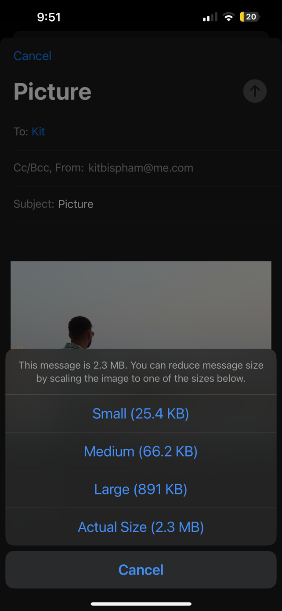
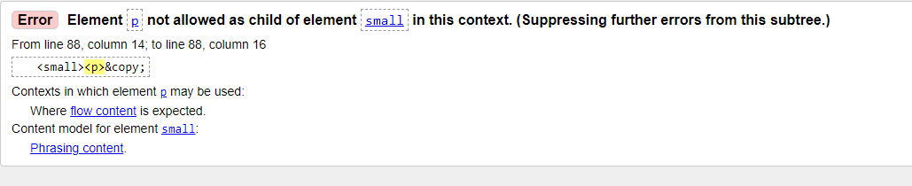
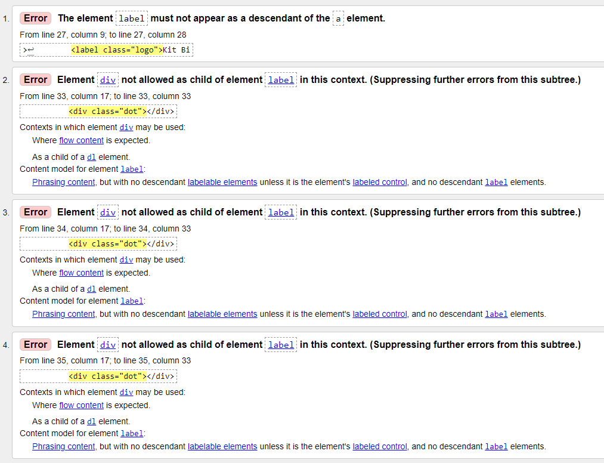
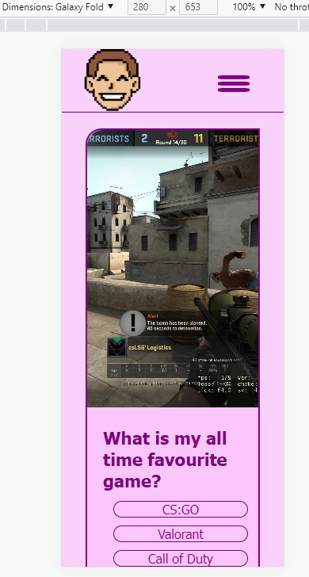
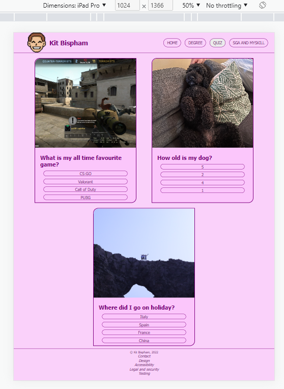
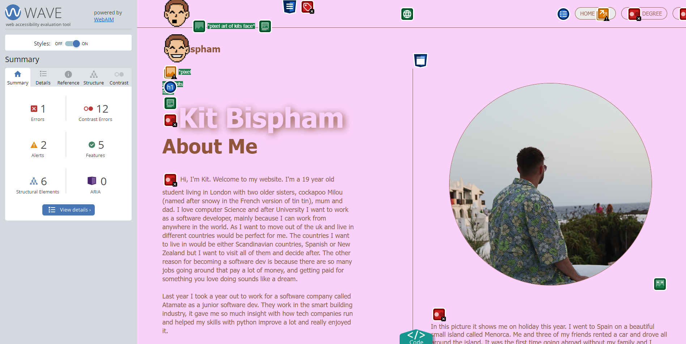
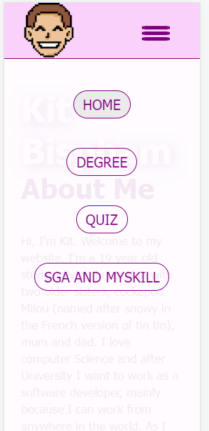

Optimisation
When sending image from my phone I first tried "Actual Size" but this made my home page slow to load so I tried Medium but the image was pixelated for larger screens and so the "large" was perfect and the home page loads quickly.
Debugging
In the footer I shouldn't use p tags inside the small tag so I took them out

I have missed used label in the nav/header bar and so on line 27 I moved the "kit Bispham out of the a tag"
The second error is about using a div inside a label however I can't change the label tag because i'm making use of the for attribute and i'm using the div to made the dots
so that error must remain. I don't get any other errors in any css or html files (apart from the one i've mentioned).
Browser testing
I used google chrome's device/responsive mode to test how all the web pages react to different sized devices.

On the quiz page the images get very cramped however you can still see the image clearly and it doesn't go off the page. In the screenshot I am uses a galaxy fold dimensions
one of the smaller phones and it still looks okay because I centered the image using the div tag and making it the background.
Also you can see that in the nav bar the title "kit bispham" is gone, however I keep the logo so they know it's my site.
When on smaller devices the nav changes into the 3 dots and when pressed it gives you a drop down menu this creates space for the nav as it wouldn't fit on the top bar.
For my quiz page I made sure that for Medium sized devices like the Ipad pros screen would be taken up by the questions and not leave massive margins. See how they stack on top of eachother like a pyramid.
Accessibility
At the start I used #8f563b which was the colour of my pixel arts hair but using wave it showed contrast errors everywhere with that brown so I changed it to purple.
I was using the same highlights for both nav bars however for visual disabilities the highlights doesn't contrast well on the phone nav so I changed it to a purple background and white text.
I also make text larger in p tags when the display becomes larger.